Capturing the Images
Before continuing with image warping and mosaicing I first captured a set of images from around the UC Berkeley campus to use throughout the project.
Doe Library
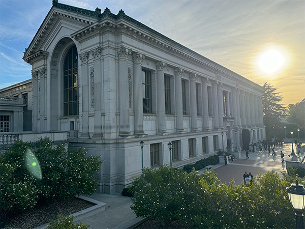Hearst Mining
Wheeler Hall
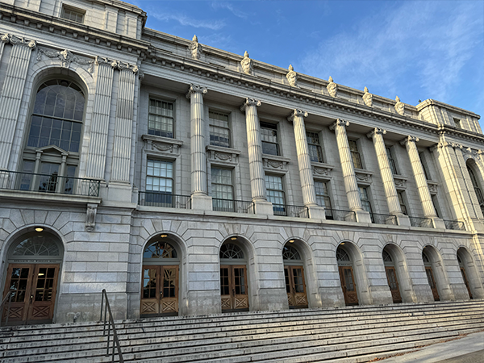IHouse Left
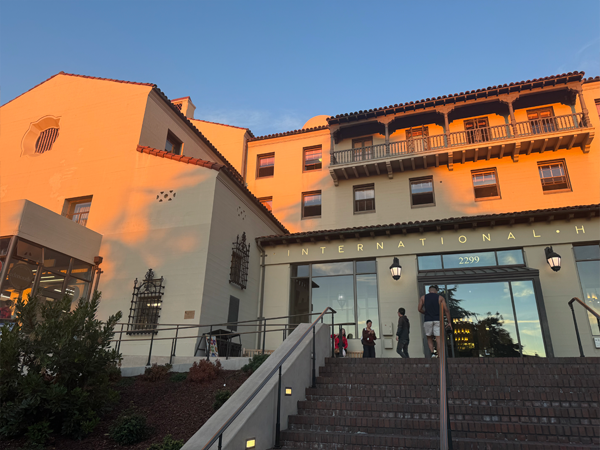Law and Society Left
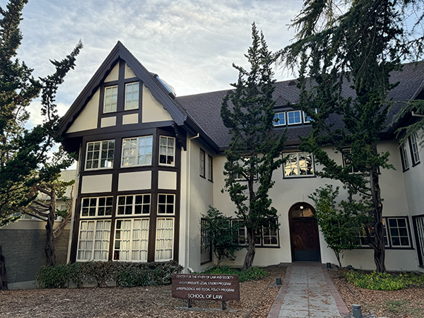VLSB Left
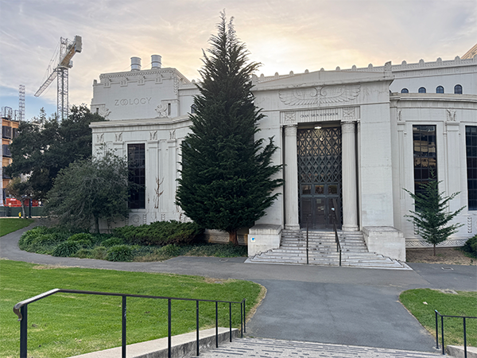IHouse Right
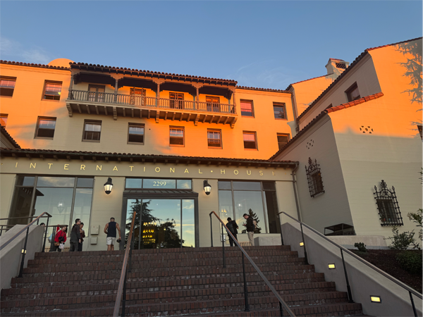Law and Society Right
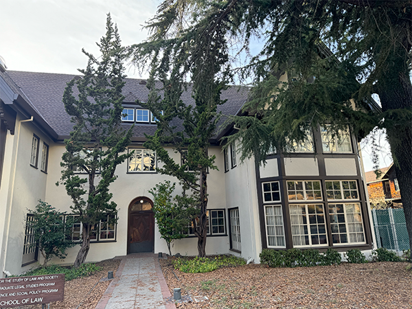VLSB Right
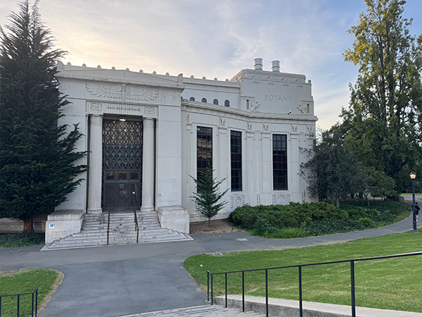Recovering Homographies
Before we are able to warp images, we first need to recover the parameters of the
transformation between each image.
In our case, the transformation is a homography and is given by:
\[
\mathbf{p'} = H \mathbf{p}
\]
where \( H \) is a \( 3 \times 3 \) matrix with 8 degrees of freedom (since the bottom-right
entry is set to 1 for normalization), and \( \mathbf{p} \) and \( \mathbf{p'} \) are the
homogeneous coordinates of the points in the two images. This can be written as:
\[
\begin{bmatrix}
x' \\
y' \\
1
\end{bmatrix}
=
\begin{bmatrix}
h_1 & h_2 & h_3 \\
h_4 & h_5 & h_6 \\
h_7 & h_8 & 1
\end{bmatrix}
\begin{bmatrix}
x \\
y \\
1
\end{bmatrix}
\]
To recover the homography matrix \( H \), we set up a system of linear equations
using the point correspondences from the two images. The system takes the following form:
\[
\begin{bmatrix}
x_1 & y_1 & 1 & 0 & 0 & 0 & -x'_1 x_1 & -x'_1 y_1 \\
0 & 0 & 0 & x_1 & y_1 & 1 & -y'_1 x_1 & -y'_1 y_1 \\
x_2 & y_2 & 1 & 0 & 0 & 0 & -x'_2 x_2 & -x'_2 y_2 \\
0 & 0 & 0 & x_2 & y_2 & 1 & -y'_2 x_2 & -y'_2 y_2 \\
\vdots & \vdots & \vdots & \vdots & \vdots & \vdots & \vdots & \vdots \\
x_n & y_n & 1 & 0 & 0 & 0 & -x'_n x_n & -x'_n y_n \\
0 & 0 & 0 & x_n & y_n & 1 & -y'_n x_n & -y'_n y_n
\end{bmatrix}
\begin{bmatrix}
h_1 \\
h_2 \\
h_3 \\
h_4 \\
h_5 \\
h_6 \\
h_7 \\
h_8
\end{bmatrix}
=
\begin{bmatrix}
x'_1 \\
y'_1 \\
x'_2 \\
y'_2 \\
\vdots \\
x'_n \\
y'_n
\end{bmatrix}
\]
In this setup, the left-hand matrix grows by two additional rows for each new
correspondence point pair, and the right-hand vector grows similarly with each new \( (x'_i, y'_i) \) pair.
To avoid the system being underdetermined, we require at least 4 point correspondences
between the two images. However, with only 4 correspondences, the solution may be sensitive
to noise and instability. When there are more than 4 correspondences, resulting in an overdetermined
system, we can solve for \( H \) using least squares, providing a good approximate solution
even in the presence of noise or small errors in the correspondences.
Image Rectification
Using this homography we can now rectify images. To do this we manually select any known rectangular surface within an image and map it to an appropriately sized rectangle, yielding the following results:
Doe Library
Doe Library Points
Doe Library Rectified
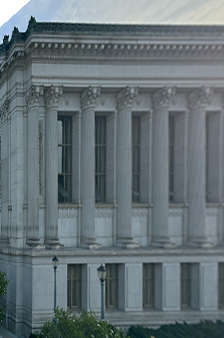Hearst Mining
Hearst Mining Points
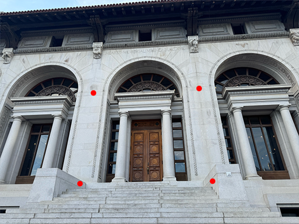Hearst Mining Rectified
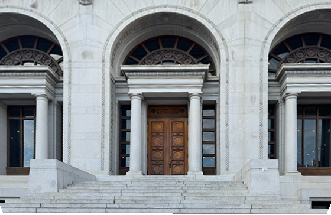Wheeler Hall
Wheeler Hall Points
Wheeler Hall Rectified
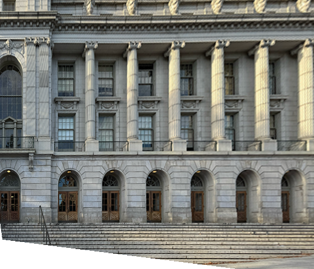Image Blending
The image blending process uses a distance transform approach to smoothly combine two images. First, the source image is warped using a homography matrix and both images are placed on a larger canvas. Distance transforms are computed from the alpha channels, with each pixel's value representing its distance to the nearest edge. These transforms are normalized and used as blending weights. Gaussian smoothing is applied to ensure soft transitions in overlapping areas. The images are then blended using a weighted combination of the distance transforms. The alpha channel is handled by taking the maximum value from both images, ensuring correct transparency. This method ensures smooth, seamless blending based on pixel proximity to image edges.
IHouse Left
IHouse Right
IHouse
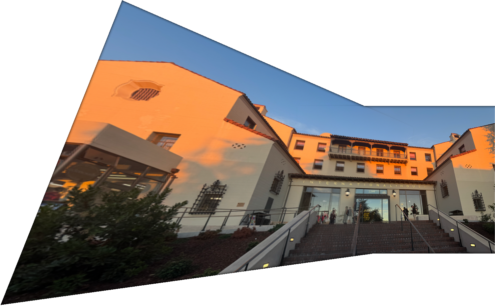Law and Society
Law and Society Right
Law and Society Mosaic
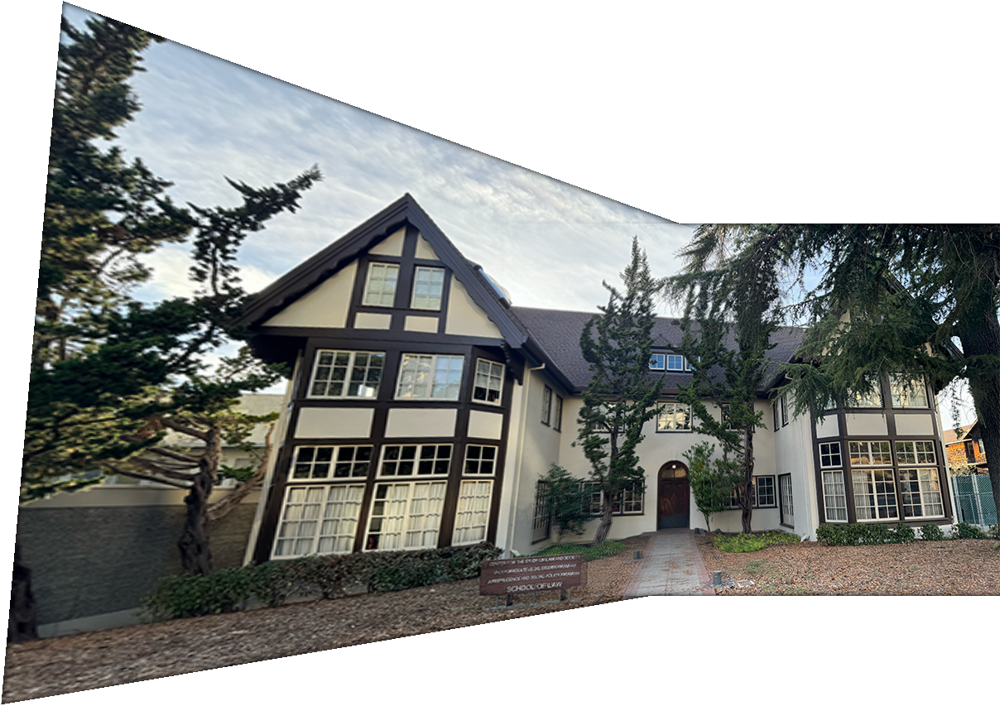VLSB Left
VLSB Right
VLSB Mosaic
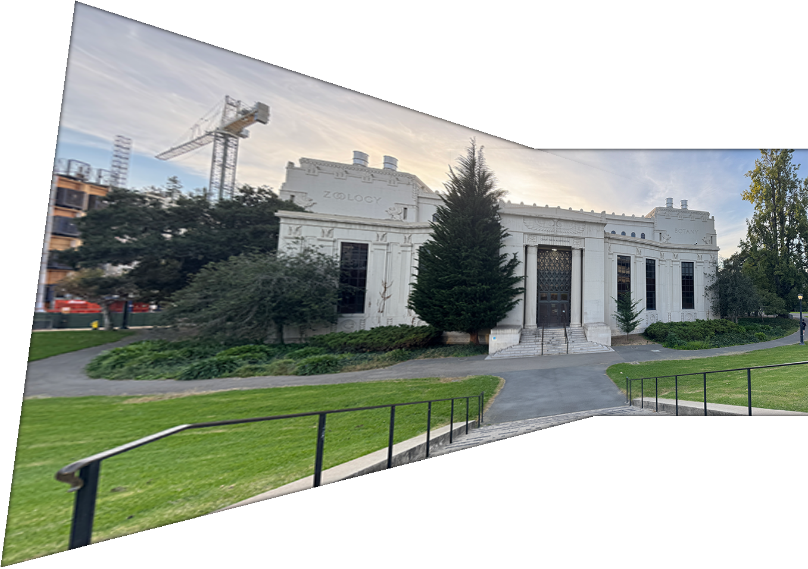